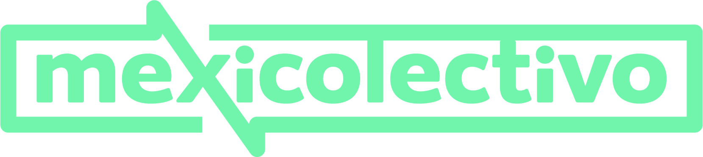

PROYECTOS
Movistar

Actualización y mantenimiento del contenido de landings ofertas de movistar, desarrollo de nuevas funcionalidades y mejoras al codigo.
Modalidad de trabajo metodologia ágil Scrum, organización de tareas con plataforma trello.
Tecnologías aplicadas: HTML - CSS - SASS - JavaScript - Jquery - PHP - Git.
Pando - Mexico Colectivo
Desarrollo de nuevas funcionalidades con Angular para entidad publica, desarrollo de front y back, manejo de protocolos http, Rxjs, Git. Usando Jira como sistema de administración, metodología Agile/Scrum, integración con servicios REST.
Desarrollo Front end Web con AngularJS, integración con servicios REST, HTML / SASS / Angular Material. Desarrollo Back end con NodeJs, integración de base de datos no relacionales, Express / MongoDB / JWT / Postman.
Boton Pago Empresas

Desarrollo de aplicaciones web con Angular para entidad Bancaria, desarrollo de front y back, pruebas de Test con Jest tanto en front como en back , pruebas de performance, Documentación,. manejo de protocolos http, Rxjs, Git. Usando Jira como sistema de administración, metodología Agile/Scrum, integración con servicios REST.
Desarrollo Front end Web con Angular, integración con servicios REST, HTML / SASS / Librerias internas del banco. Desarrollo Back end con NodeJs, integración de base de datos relacionales y no relacionales, Express / MongoDB / MySql / Postman / JEST / Jmeter